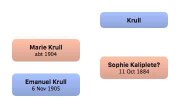

Home
Home
 Persons
Persons
 Families
Families
 Sources
Sources
 Statistics
Statistics
Krull

Context

Parents
| Father | Date of Birth | Mother | Date of Birth |
|---|
Partners & Children
| Partners | Date of Birth | Children |
|---|---|---|
 Sophie Kaliplete? Sophie Kaliplete?
|
11 Oct 1884 |
Marie Krull
Emanuel Krull
|
Events
Facts
Media
Note
Sources
Kinships
| Name | Degree of Kinship | Date of Birth | Place of Birth | Date of Death | Place of Death |
|---|---|---|---|---|---|
| Partners | |||||
| Partner or Wife | 11 Oct 1884 | Germany | 21 Nov 1960 | San Antonio, Bexar, Texas | |
| Children | |||||
| Daughter | abt 1904 | Germany | |||
| Son | 6 Nov 1905 | Austria | Jul 1986 | Dixboro, Washtenaw, Michigan | |
| Grandchildren | |||||
| Grandson | abt 1933 | Michigan | |||